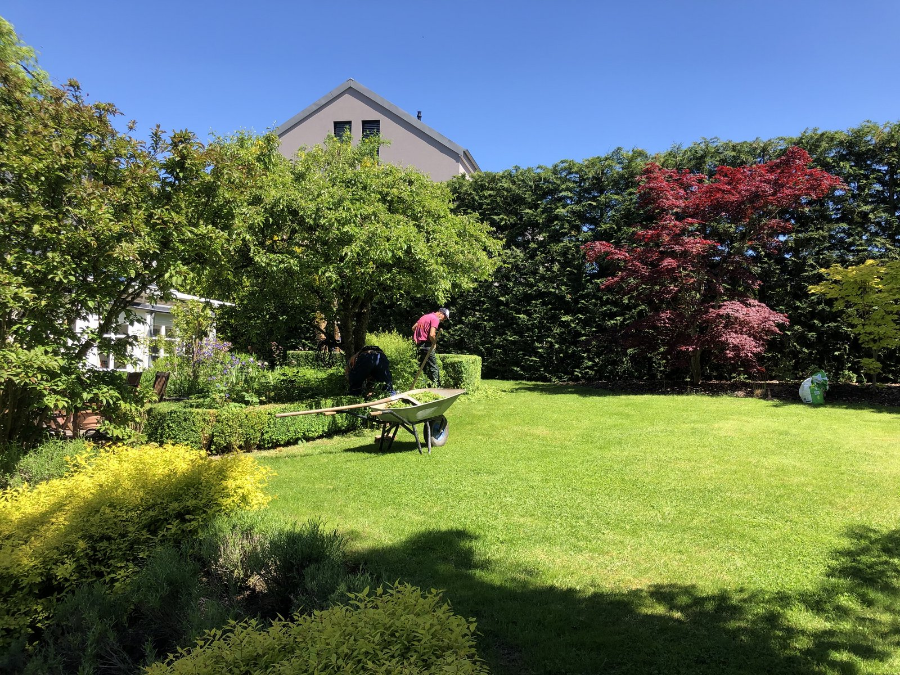
Pépinière de 12 hectares, conception paysagère sur-mesure par architectes paysagistes et réalisations d’excellence pour villas et propriétés au Luxembourg.
Création complète de parcs et jardins privés, terrasses d'architecte en pierre naturelle, piscines & clôtures élégantes.
Accès direct à nos 12 hectares de pépinière : arbres remarquables, arbustes formés, fruitiers et conseils de pépiniéristes.
Fourniture de gros sujets, terre végétale criblée (vrac ou BigBags) et livraison sur chantier avec nos camions-grues.
Contrairement aux grandes surfaces de bricolage, chaque arbre et arbuste élevé chez Bamschoul Becker grandit dans les conditions climatiques réelles du Luxembourg. Notre site de vente situé Op Rellent à Steinsel vous accueille pour choisir vous-même les sujets qui composeront votre havre de verdure.
Choix direct sur pied : Parcourez nos allées et marquez vos arbres préférés avec nos conseillers pépiniéristes.
Livraison & Plantation à domicile : Notre flotte de camions équipés de grues livre et installe même les sujets de 8 mètres directement dans votre jardin.
Garantie de reprise : Des conseils avisés sur la nature du sol, le tuteurage et l'arrosage pour une croissance optimale.


Disponible en vrac ou en BigBags avec livraison grue à domicile.
Nous concevons et créons votre jardin idéal en alliant harmonie végétale, maçonnerie paysagère noble et technologies modernes de gestion de l’eau.
Analyse topographique du terrain, exposition et nature du sol. Sélection rigoureuse de vos végétaux directement en pépinière à Steinsel et plans d’implantation adaptés.
Pavage noble, terrasses en grès cérame ou bois exotique, murs en pierre sèche et clôtures élégantes pour sublimer le relief de votre terrain.
Installation de systèmes intelligents enterrés (Rain Bird / Hunter) avec sondes d'humidité pour préserver l'eau tout en assurant la vitalité de vos massifs.
Contrats d'entretien annuel ou interventions ponctuelles : taille raisonnée d'arbres remarquables, scarification et tonte de pelouse haute qualité.
Faites glisser le curseur pour voir comment nous transformons un terrain nu de nouvelle construction en un sanctuaire végétal architectural à Steinsel.
 APRÈS (Création Becker)
APRÈS (Création Becker)
 AVANT (Terrain brut)
AVANT (Terrain brut)
Le site officiel actuel (bamschoulbecker.lu) héberge des décennies de savoir-faire horticole. Cette maquette de refonte valorise 100% des photos et chantiers authentiques de la pépinière, tout en apportant une fluidité mobile immédiate et un outil de conversion de devis de pointe.

Retrouvez ici les photographies authentiques des projets menés par nos équipes : de la transplantation de grands sujets à la grue jusqu’aux murs traditionnels en pierre de schiste et d’Ösling.
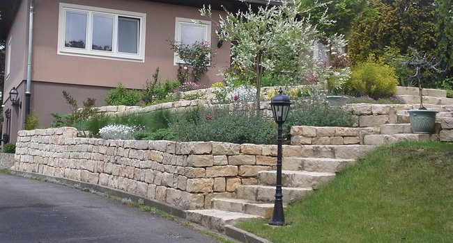
Photo Chantier Becker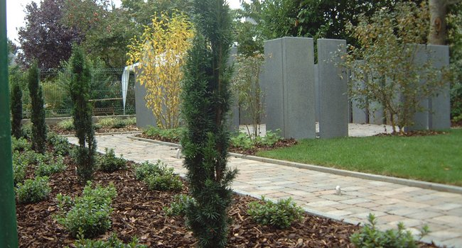
Photo Chantier Becker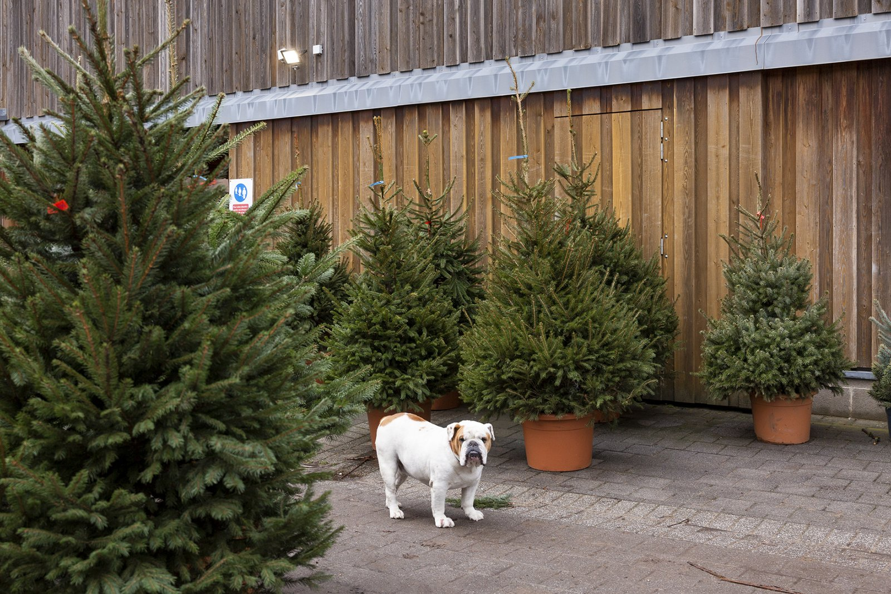
Photo Pépinière Becker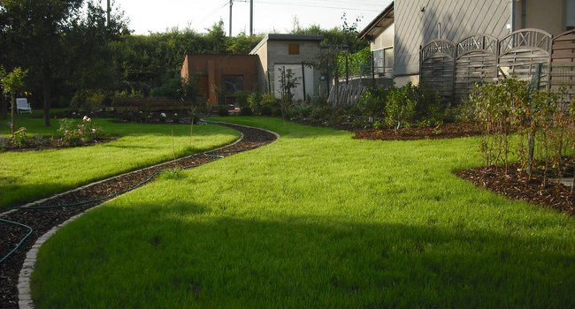
Photo Chantier Becker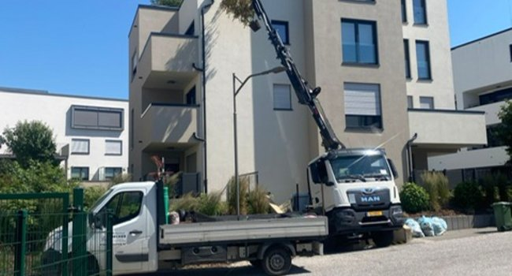
Photo Chantier Becker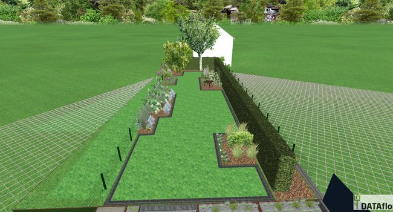
Photo Chantier Becker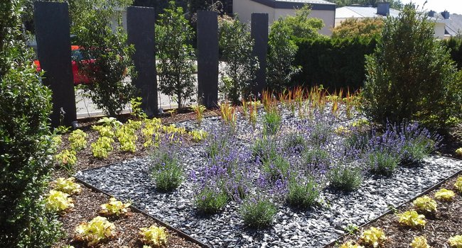
Photo Chantier Becker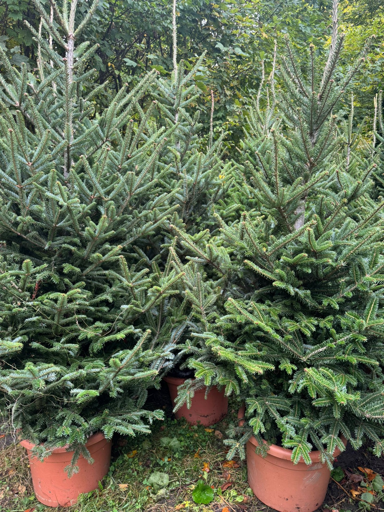
Équipe Réelle Becker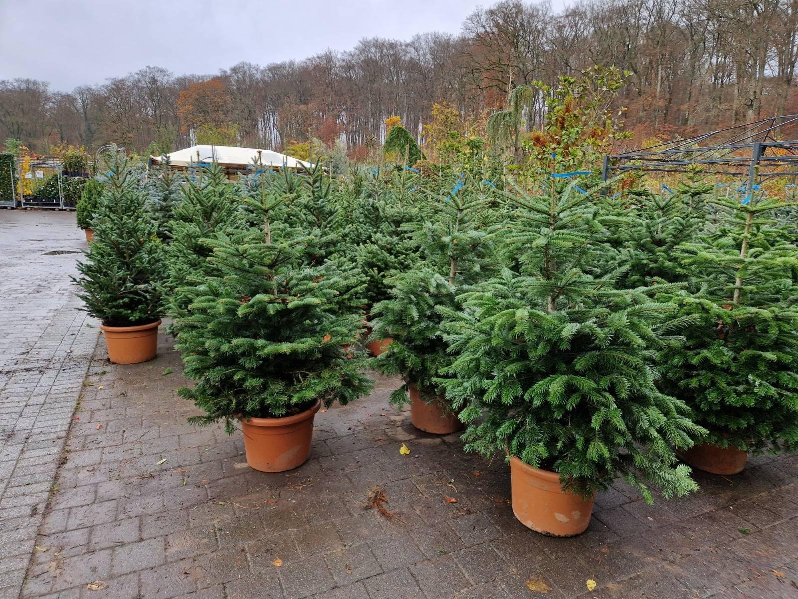
Photo Pépinière BeckerAuthenticité garantie : Ces chantiers ont été conçus et exécutés par les maîtres pépiniéristes et paysagistes de Bamschoul Becker avec nos propres engins de terrassement et camions-grues.
 Arbre Majestueux
Arbre Majestueux
Idéal pour créer un point focal dans un grand jardin. Couleurs d'automne flamboyantes, haute résistance au froid luxembourgeois.
 Haie & Intimité
Haie & Intimité
L'alternative élégante et durable au laurier. Feuillage marcescent ou persistant, brise-vue naturel parfait pour lotissements et villas.
 Verger Local
Verger Local
Variétés rustiques traditionnelles du terroir luxembourgeois : reinettes, mirabelles, quetsches. Formes en quenouille, demi-tige ou palissées.
 Fleurs & Parfums
Fleurs & Parfums
Floraisons étalées de mai aux premières gelées. Plantes mellifères favorables à la biodiversité, nécessitant très peu d'arrosage une fois enracinées.
 Sujet d'Exception
Sujet d'Exception
Véritables sculptures vivantes façonnées pendant plus de 20 ans par la main du maître pépiniériste. Pour une entrée de propriété saisissante.
 Brise-vue Moderne
Brise-vue Moderne
Des variétés sélectionnées qui ne colonisent pas le sol (cespiteux). Feuillage lustré, port dense et persistant toute l’année.
Fini les sapins coupés jetés sur le trottoir après les fêtes. Depuis plusieurs années, Bamschoul Becker innove avec un service éco-responsable plébiscité au Luxembourg :
Sélectionnez votre sapin vivant élevé en conteneur dans notre pépinière.
Livraison à domicile au Luxembourg avant Noël, vert et plein de fraîcheur.
En janvier, nous le récupérons et le replantons dans nos sols à Steinsel.
« Un sapin qui continue de vivre après Noël »
Sélectionnez les caractéristiques de votre projet pour obtenir une première estimation indicative et transmettre directement votre cahier des charges à notre bureau d’études.
Fourniture de végétaux de pépinière, terrassement, pose et garantie de reprise inclus.
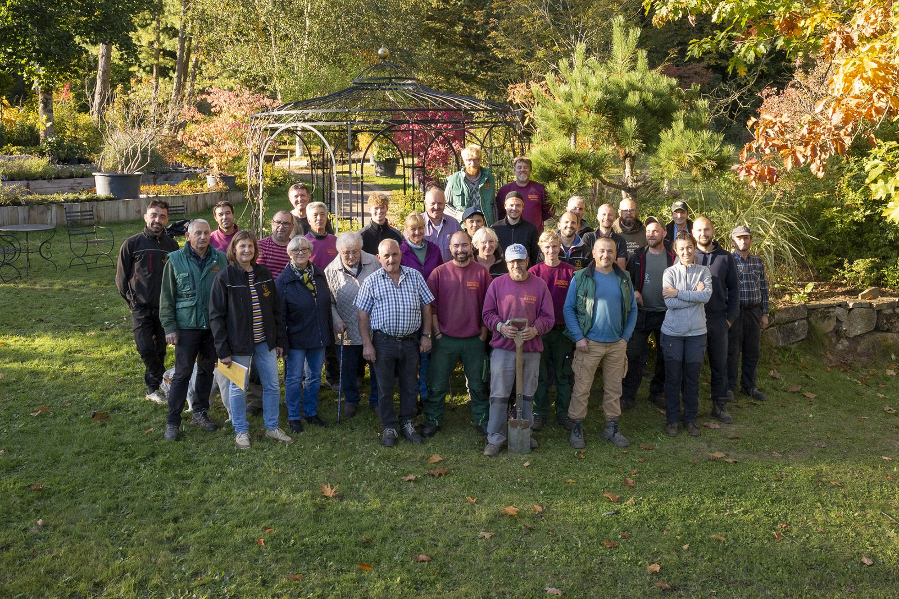
Fondée à la fin du XIXe siècle, la maison Bamschoul Becker a grandi avec le Grand-Duché de Luxembourg. Des premiers vergers traditionnels de la vallée de l'Alzette jusqu'aux grands parcs contemporains, notre nom est synonyme de rigueur, de savoir-faire horticole authentique et de pérennité.
Aujourd’hui, nous perpétuons cette passion à travers 12 hectares de pépinières, un parc moderne de machines de terrassement, et un bureau d'études paysager dédié à la mise en valeur des plus beaux jardins du pays.
Sélection stricte des porte-greffes et élevage en pleine terre pour une robustesse maximale.
Entreprise 100% luxembourgeoise basée à Steinsel, interlocuteurs multilingues.
Découvrez l'avis des propriétaires de maisons et résidences qui ont confié leurs extérieurs à Becker.
« L'étude sur-mesure et la sélection directe en pépinière à Steinsel nous ont permis de concevoir notre jardin idéal avant même les travaux. Le résultat dépasse nos espérances, les plantations ont repris avec une vigueur impressionnante dès le premier printemps. »
« Un choix colossal d'arbres à Steinsel ! Nous avons pu marquer nos trois chênes directement dans leur champ. La livraison avec camion-grue au-dessus de notre garage s'est passée avec un professionnalisme exemplaire. »
« Nous louons chaque année notre sapin avec leur service Rent-a-Tree. Livré en pot à notre porte et repris en janvier pour être replanté à Steinsel. C'est exactement l'engagement écologique dont le Luxembourg a besoin ! »
Pour une expérience fluide, nous disposons d'un site dédié à la pépinière et à la vente, et d'un bureau administratif pour les études paysagères.
2, Op Rellent • L-7323 Steinsel (face chalet scout « Well Sai »)
Visite de la pépinière, achat direct de plantes, arbustes, terreaux, enlèvement de terre criblée et retrait de commandes.
27a, rue Paul Eyschen • L-7317 Steinsel
Rendez-vous pour projets d'aménagement globaux, présentation des projets d'aménagement, devis personnalisés et questions administratives.